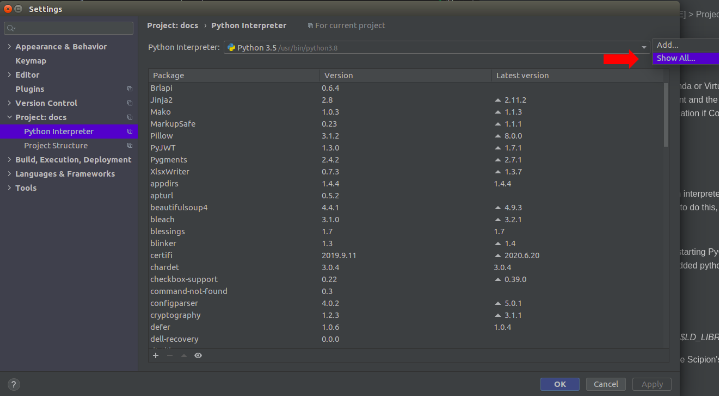
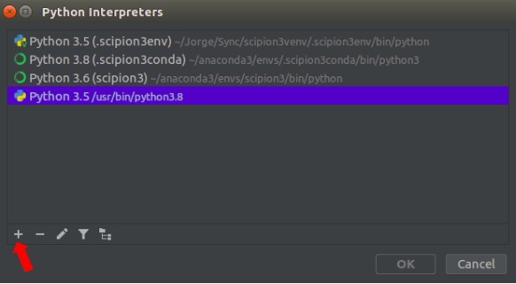
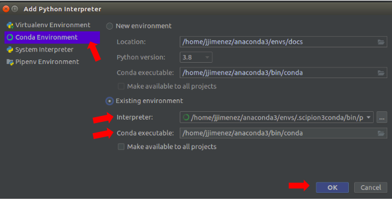
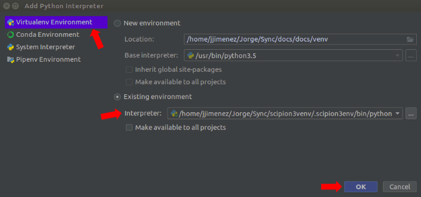
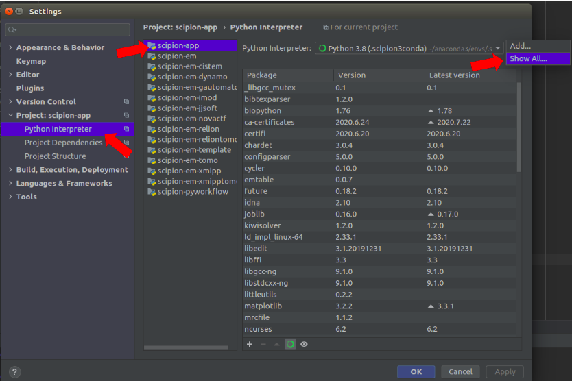
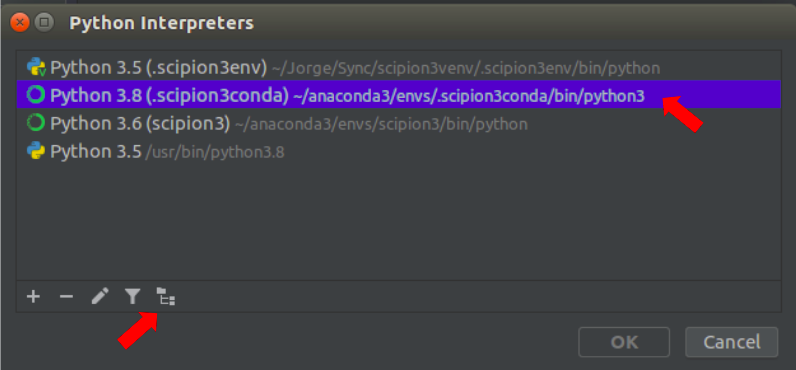
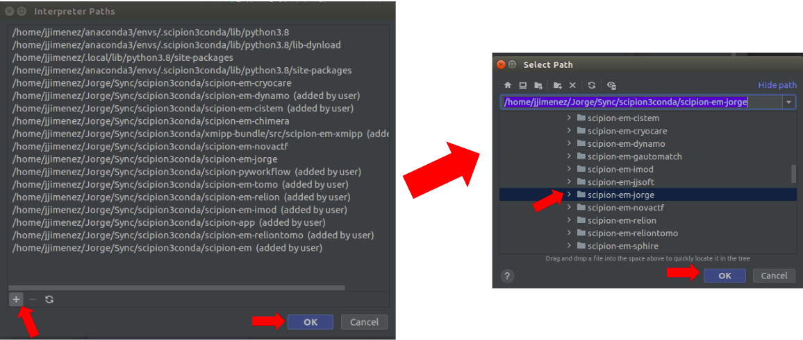
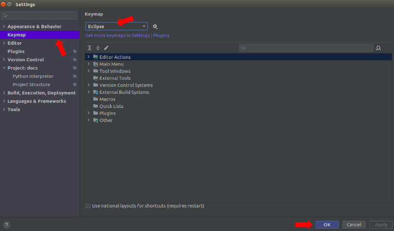
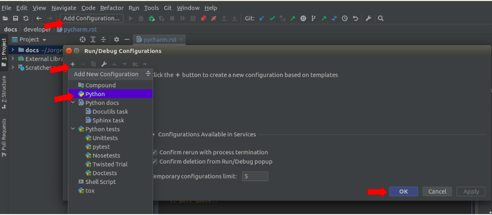
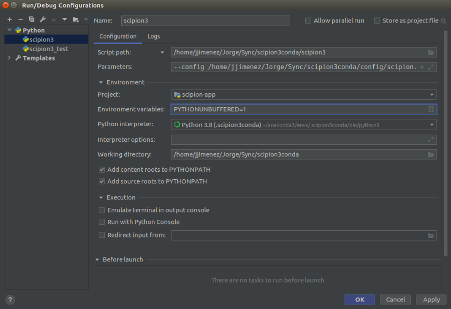

PyCharm IDE¶
Getting started¶
Setting Up PyCharm¶
It is assumed that Scipion3 has been previously installed.
Open PyCharm and create a project
Open projects scipion-app, scipion-em and scipion-pyworkflow (use “Attach to project” option).
Configure project interpreter, which will be the python of your Scipion3 environment. Go to:
File > Settings > Project: [PROJECT_NAME] > Project Interpreter.
Then, click on the gear icon an select Show All:
After that, click on the ‘+’ icon to add a new interpreter:
Once there select your Environment type (Conda or Virtual Environment) and choose Existing Environment and the corresponding options (Interpreter, Conda Location if Conda).
- Conda:
- Virtual environment:
Note: if the project does not recognize some of the dependencies (for example if they appear underlined in red in the import section at the beginning of a .py file), add the dependency paths manually. To do that, got to File > Settings > Project [PROJECT_NAME], click on the gear icon and select Show All:
Then, select the interpreter configured at the beginning of the session and click on the directories hierarchy icon (which can be below or at the top right of the window, depending on the PyCharm version).
Finally, click on ‘+’ icon and add the corresponding paths for scipion-em, scipion-pyworkflow and scipion app.
Choose keymap & check keyboard shortcuts: to do this, just go to:
File > Settings > Keymap
Then, select Eclipse (this is the one we use, but you can choose the one which best suits for you. Nevertheless, key shortcuts mentioned from now on will be referred to Eclipse keymap) from the list. If isn’t present, click right below the list in ‘Get more keymaps in Settings | Plugins’, search for Eclipse and install it. After that, Eclipse keymap should appear on the list:
- Some useful keyboard shortcuts are:
- F3: go to definition.
- Alt + left arrow: go to previous cursor position.
- Alt + right arrow: got to next cursor position.
- Ctrl + F: find in file.
- Ctrl + H: find in project/location.
- Ctrl + O: show file structure.
PyCharm configurations: they can be used to easily executed commands in one click. To create a new configuration, click on Add Configuration > ‘+’ icon > python:
As an example, the image below shows a pycharm configuration to launch Scipion3:
It can be observed that very complex executions can be easily carried out with multiple options such as environment variables.
Attaching to Scipion3 processes in PyCharm¶
Scipion launcher is a small python script that will launch a new process at the end. So, the code that you may want to debug falls probably in the second process (if you are interested on the GUI processes or tests) or even further in the “third” if you are interested in the protocol steps execution. To be able to debug reach those processes in PyCharm IDE, you must allow this in your system and then use Pycharm’s “Attach to process…” menu. This can be done temporally, in UBUNTU, typing:
For a permanent modification go here.
See Debugging Scipion with PyCharm tutorial about debugging Scipion3 processes.